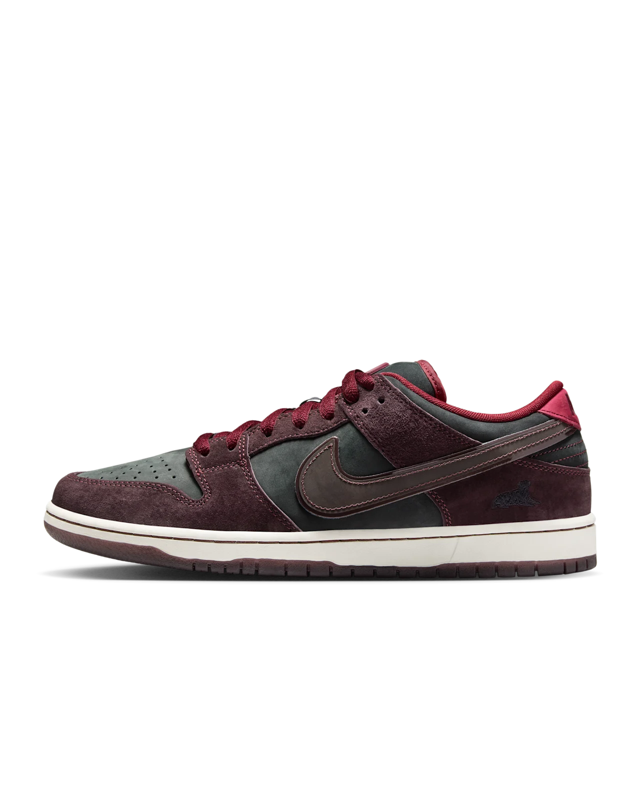

Nike SB Dunk Low Pro x Riot Skateshop
Mahogany and Team Red
A proud city whose dedication to authenticity is recognised worldwide, the Dunk Low Pro x Riot Skateshop incorporates regional aesthetics from Bordeaux's rich winemaking history through custom details and finishes.
Using a Mahogany leather upper with deep tonal reds and black nubuck underlays, its translucent red-tinged sole reveals a homage to the grapes that create Bordeaux's unmistakable flavour profile.
The wine theme continues with gradient cork insole artwork, wax-seal tongue logos and debossed heel branding. As a finishing touch, this special design offers an ode to their departed shop sentinel with an illustrated embroidered heel logo.